CloudWatch・SNS 監視／通知
Amazon EC2、Windows OSおよびAmazon WorkSpacesのメトリクスをCloudWatchへ集約する
SNS通知、アラーム、ダッシュボードおよび監視動作の確認手順を整理する
01. Amazon SNS通知と監視構成
1. 監視構成
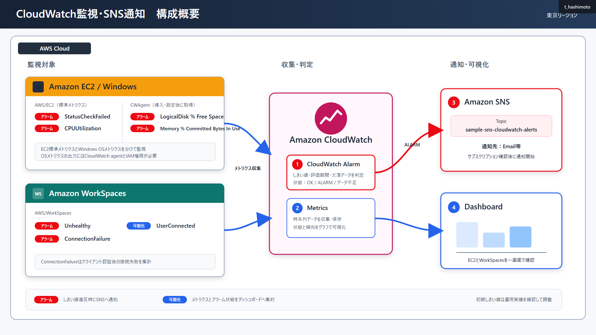
Amazon EC2とAmazon WorkSpacesの標準メトリクス、およびCloudWatch agentが収集するWindows OSメトリクスをCloudWatchへ集約します。CloudWatchアラームがしきい値違反を検出した場合はAmazon SNSへ通知し、メトリクスとアラーム状態はダッシュボードで確認する
| 対象 | 監視・表示するメトリクス | 用途 |
|---|---|---|
| Amazon EC2 | StatusCheckFailed、CPUUtilization |
ステータスチェック失敗とCPU高負荷の検知 |
| Windows OS | LogicalDisk % Free Space、Memory % Committed Bytes In Use |
ディスク空き容量とメモリ使用率の監視。CloudWatch agentが必要 |
| Amazon WorkSpaces | Unhealthy、ConnectionFailure、UserConnected |
異常状態・接続失敗の検知と接続状況の可視化 |
| Amazon WorkSpaces（追加推奨） | CPUUsage、MemoryUsage、RootVolumeDiskUsage、UserVolumeDiskUsage |
リソース不足とボリューム容量逼迫の検知 |
| Amazon WorkSpaces（接続品質） | SessionLaunchTime、InSessionLatency、UDPPacketLossRate、TCPRetransmissionRate |
通常値をダッシュボードで確認した後にアラーム化を検討 |
| Amazon SNS | sample-sns-cloudwatch-alerts |
アラーム状態変更の通知先 |
| CloudWatchダッシュボード | 上記メトリクスと作成済みアラーム | 状態と傾向の一元確認 |
CloudWatchアラームのOKは、設定した評価期間内でしきい値違反が成立していないことを示します。OS、アプリケーション、認証などを含むサービス全体の正常性を保証するものではない
2. 目的
CloudWatchアラームがALARM状態へ変わった際に、運用担当者へ通知するためのSNSトピックとサブスクリプションを設定する
3. 前提・入力値
| 項目 | 入力値 |
|---|---|
| リージョン | アジアパシフィック（東京）ap-northeast-1 |
| トピックタイプ | スタンダード |
| トピック名 | sample-sns-cloudwatch-alerts |
| 表示名 | 任意。SMS利用時のみ意味を持つため、メール通知のみの場合は空欄可 |
| サブスクリプションプロトコル | Email（運用方針に応じてHTTPS等も可） |
| エンドポイント | お客様指定の運用通知先 |
4. SNSトピックを作成する
手順1：SNSを開く
- AWSマネジメントコンソールでリージョンが「アジアパシフィック（東京）」であることを確認
- Amazon SNSを開き、左メニューからトピックを選択
- 作成前のトピック一覧を確認
| 項目 | 内容 |
|---|---|
| 目的 | 既存トピックとの重複を避ける |
| 期待結果 | 同名のトピックが存在しない |
| 証跡 | トピック一覧画面 |
| 注意 | 同名または同一用途のトピックがある場合は新規作成せず、所有者と利用範囲を確認する |
手順2：トピック作成画面へ進む
トピックの作成を選択する
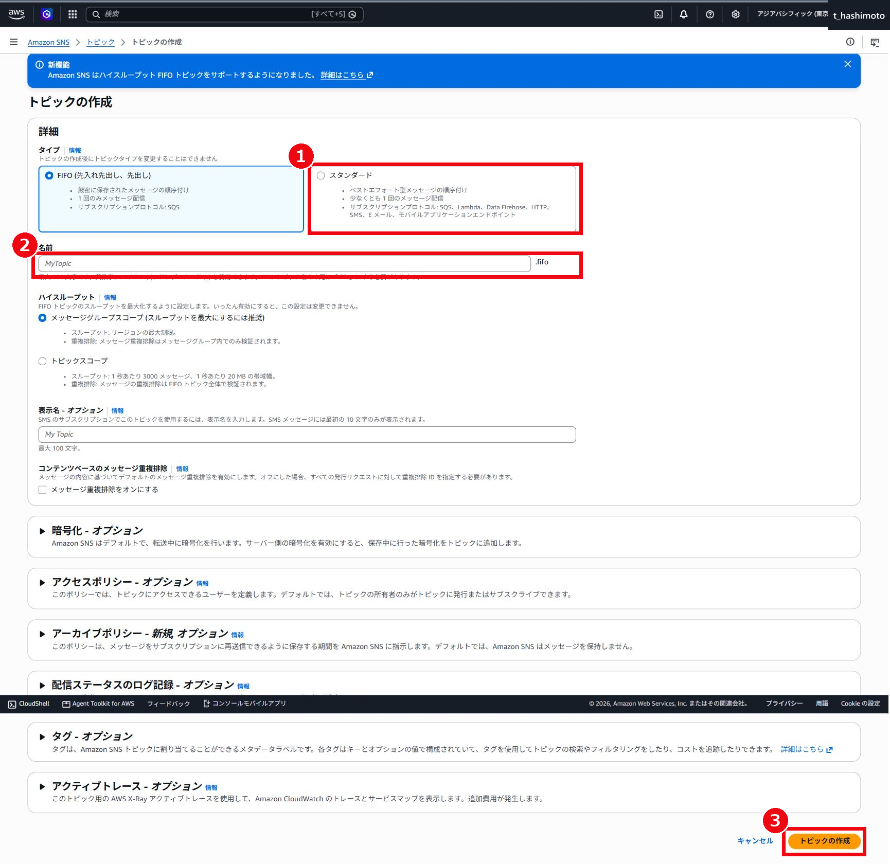
手順3：トピック名とタイプを設定する
- タイプでスタンダードを選択
- 名前に
sample-sns-cloudwatch-alertsを入力 - 暗号化、アクセスポリシー、配信ステータスのログ記録は、組織のセキュリティ基準で指定がなければ初期値のままと
- トピックの作成を選択
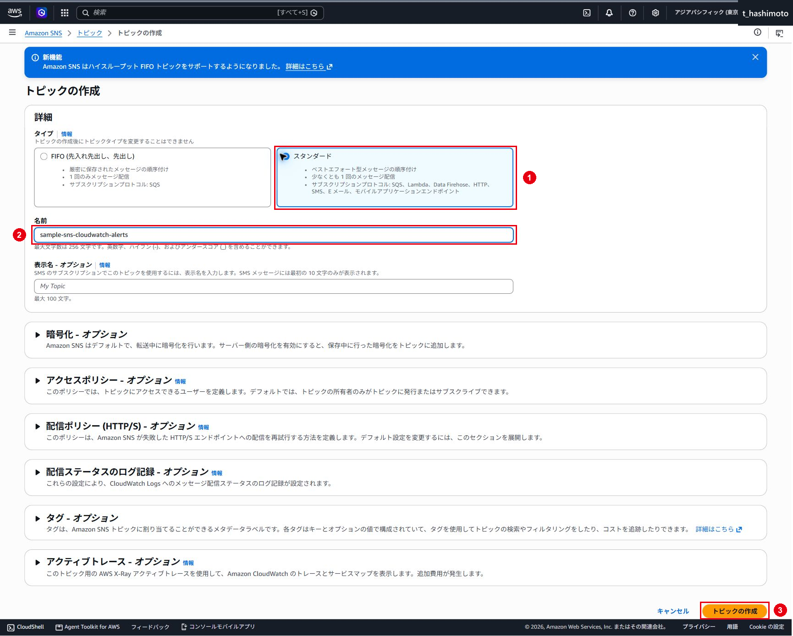
| 項目 | 内容 |
|---|---|
| 期待結果 | トピックが作成され、トピックARNが表示される |
| 証跡 | トピック詳細の名前、タイプ、ARN |
| 注意 | FIFOトピックは本手順では使用しない |
手順4：作成結果を確認する
トピック詳細画面で、名前がsample-sns-cloudwatch-alerts、タイプがスタンダードであることを確認する
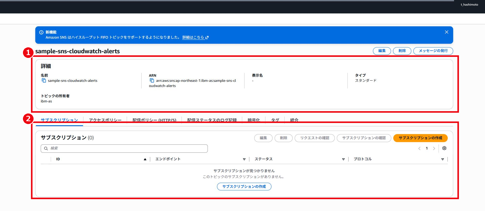
5. サブスクリプションを作成する
検証環境では未設定
実際の通知先が未確定のため、トピックのみ作成済みです。通知先はお客様の運用窓口を確認してから設定してください
- 作成したトピックの詳細でサブスクリプションの作成を選択
- プロトコルでEmailを選択
- エンドポイントに運用通知先メールアドレスを入力
- サブスクリプションの作成を選択
- 宛先に届いたAWS Notificationメールを開き、Confirm subscriptionを選択
- SNSコンソールでステータスが
Confirmedになったことを確認
| 項目 | 内容 |
|---|---|
| 目的 | アラーム通知の配信先を有効化する |
| 入力値 | お客様指定の通知先メールアドレス |
| 期待結果 | サブスクリプションのステータスがConfirmed |
| 証跡 | SNSのサブスクリプション一覧と、件名・宛先・受信日時が分かるテスト通知 |
| 注意 | Pending confirmationのままでは通知されない。迷惑メールフォルダーも確認する |
| ロールバック | 誤ったサブスクリプションのみを選択して削除する |
| 未検証 | 検証環境では通知先未確定のため、購読確認およびメール受信は未実施 |
6. セキュリティ・運用上の注意
- 個人メールアドレスではなく、監視担当者が共同利用する配布リストを推奨する
- 本番、検証、開発で通知先を分ける場合は、環境別のトピック名を定義する
- CloudWatchアラーム作成時に、
ALARMへの遷移通知を本トピックへ関連付けます。必要に応じてOK復旧通知も追加する - トピックを削除すると、参照中のアラームから通知できなくなります。削除前にCloudWatchアラームのアクションを確認する
7. 公式資料
02. EC2・Windows OS監視
1. 目的
EC2の標準メトリクスでインスタンスの死活とCPU負荷を監視し、CloudWatch agentでWindows OSの論理ディスク空き容量とメモリ使用率を監視する
2. 前提・入力値
| 項目 | 値 |
|---|---|
| 検証用EC2 | i-05914a8b6088a3a42 |
| EC2名 | Sample-mng-001 |
| EC2インスタンスロール | Sample_EC2Role |
| SNSトピック | sample-sns-cloudwatch-alerts |
| リージョン | アジアパシフィック（東京）ap-northeast-1 |
| インスタンス用IAMポリシー | AmazonSSMManagedInstanceCore、CloudWatchAgentServerPolicy（Windows OSメトリクス収集時） |
| ネットワーク | 対象EC2からTCP/443でSystems Manager、Parameter Store、CloudWatchの各サービスエンドポイントへ到達できること。インターネットへ直接公開する必要はなく、NAT／プロキシまたは対応VPCエンドポイントを使用可能 |
権限の考え方
EC2上でCloudWatch agentからメトリクス・ログを送信する実行ロールにはCloudWatchAgentServerPolicyを使用します。CloudWatchAgentAdminPolicyは、設定ウィザード等からSystems Manager Parameter StoreへCloudWatch agent設定を書き込む管理用途で必要になる権限を含むため、通常の送信用EC2実行ロールには付与しません。設定作成者と送信元EC2の役割を分け、最小権限を優先する
3. EC2ステータスチェックアラームを作成する
手順1：作成前のアラームを確認する
CloudWatchでアラーム－すべてのアラームを開き、同じインスタンス・メトリクスのアラームがないことを確認してから、アラームの作成を選択する
手順2：StatusCheckFailedを選択する
- メトリクスの選択を選択
AWS/EC2－インスタンス別メトリクスを開く- インスタンスID
i-05914a8b6088a3a42、メトリクス名StatusCheckFailedの行を選択
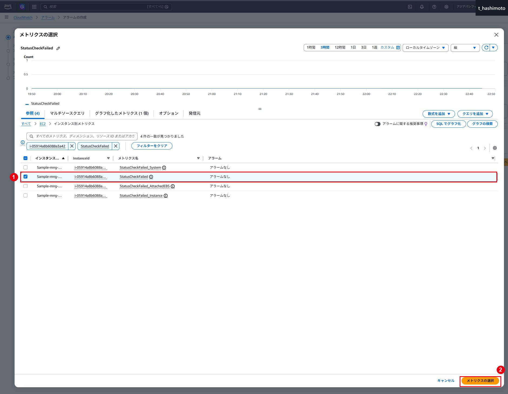
手順3：条件を設定する
| 設定項目 | 設定値 |
|---|---|
| 統計 | 最大値（Maximum） |
| 期間 | 5分 |
| しきい値の種類 | 静的 |
| 条件 | 1以上 |
| アラームを実行するデータポイント | 2/2 |
| 欠落データの処理 | 欠落（missing） |
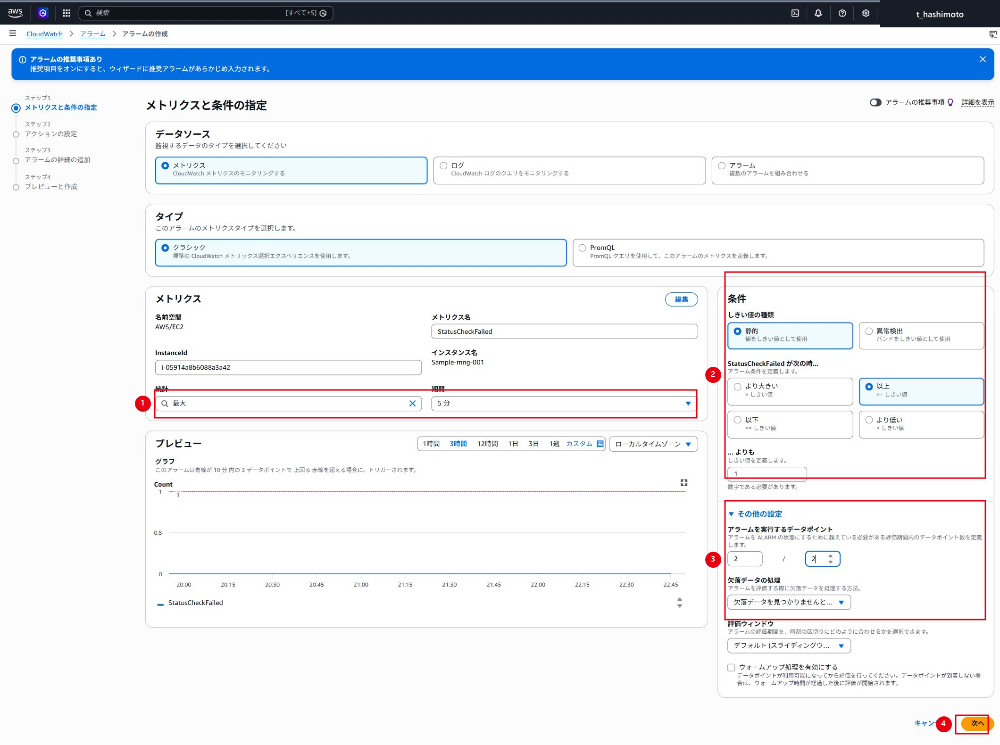
StatusCheckFailedは、インスタンスまたは基盤側のステータスチェックに失敗した場合に1となります。停止済みインスタンスではメトリクスが途切れ、設定によりINSUFFICIENT_DATAとなる場合があります。「停止＝ステータスチェック失敗」ではない
手順4：SNS通知を設定する
- アラーム状態トリガーでアラーム状態を選択
- 既存のSNSトピックを選択を選択
sample-sns-cloudwatch-alertsを選択
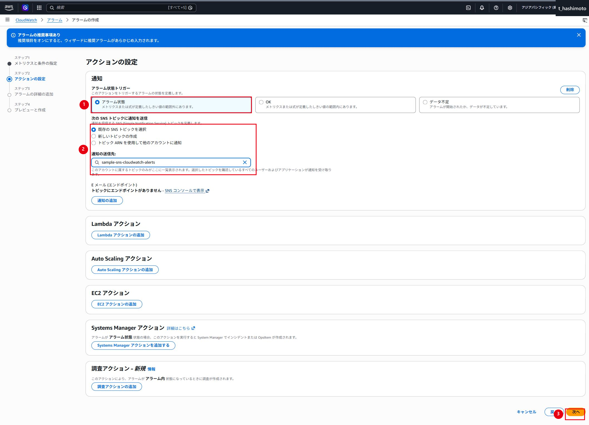
手順5：名前と説明を設定する
| 項目 | 値 |
|---|---|
| アラーム名 | sample-cw-critical-ec2-statuscheckfailed-i-05914a8b6088a3a42 |
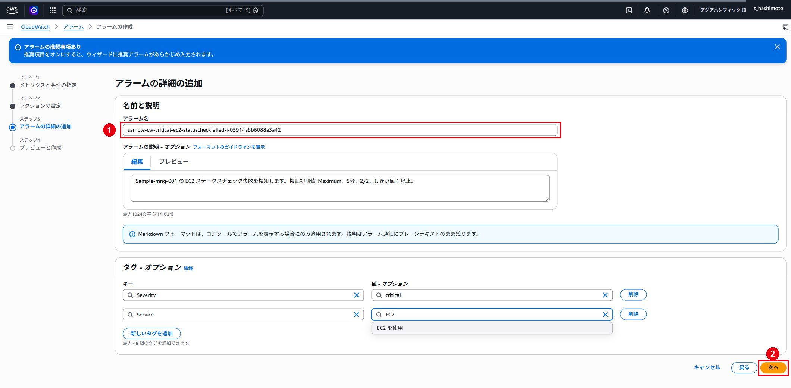
手順6：内容を確認して作成する
設定値、対象インスタンス、SNSトピックを確認し、アラームの作成を選択する
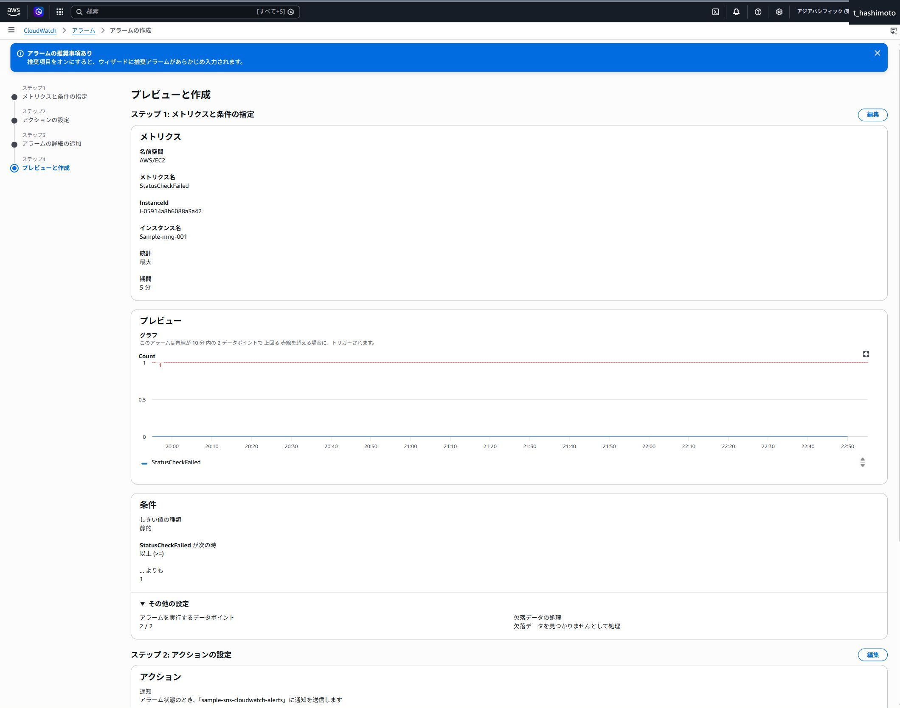
| 項目 | 内容 |
|---|---|
| 期待結果 | アラームが作成され、メトリクス取得後に状態がOKとなる |
| 証跡 | アラーム詳細、状態、アクション、履歴 |
| 注意 | 作成直後は評価データがそろうまでINSUFFICIENT_DATAになる場合がある |
| ロールバック | 対象アラームのみを削除する。EC2やSNSトピックは削除しない |
4. CPU使用率アラームを作成する
次の点を除き、前節と同じ流れで作成する
| 設定項目 | 設定値 |
|---|---|
| メトリクス | AWS/EC2－CPUUtilization |
| ディメンション | InstanceId=i-05914a8b6088a3a42 |
| 統計 | 平均値（Average） |
| 期間 | 5分 |
| 条件 | 80%以上 |
| アラームを実行するデータポイント | 3/3 |
| 欠落データの処理 | 正常（notBreaching） |
| アラーム名 | sample-cw-warning-ec2-cpu-high-i-05914a8b6088a3a42 |
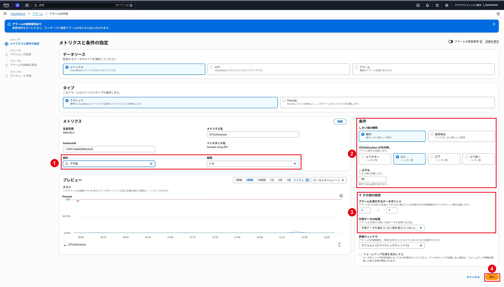
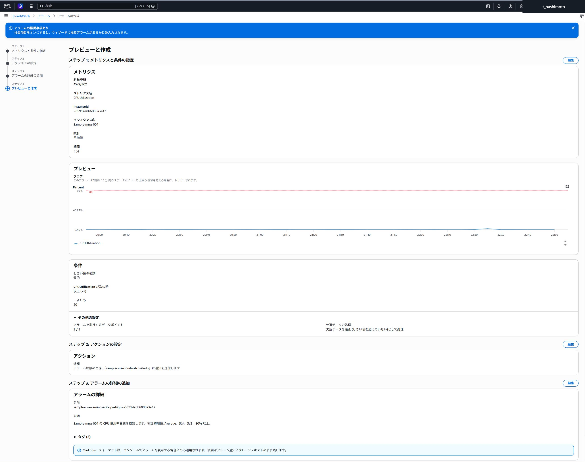
しきい値について
80%は検証用の初期値であり、AWSが全ワークロードに推奨する固定値ではありません。導入後の通常値、バースト利用、バッチ処理時間を確認し、継続時間とともに確定する
5. Windows OSメトリクスを出力する
EC2標準メトリクスだけでは、Windowsのメモリ使用率とドライブ別空き容量は取得できません。CloudWatch agentをインストール・設定してCWAgent名前空間へ送信する
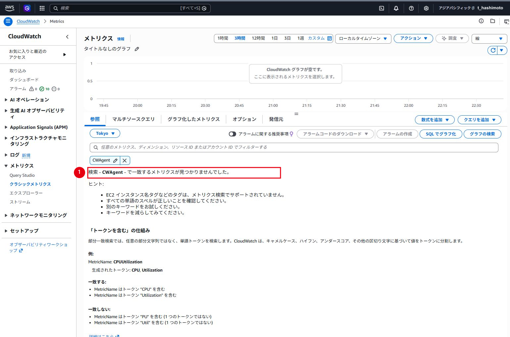
手順1：IAM権限を確認する
EC2に関連付けたインスタンスプロファイルへ、少なくとも次のAWS管理ポリシーが付与されていることを確認する
- Systems Managerで管理する場合：
AmazonSSMManagedInstanceCore - CloudWatch agentでメトリクス・ログを送信する場合：
CloudWatchAgentServerPolicy
本検証では、Sample_EC2RoleにAmazonSSMManagedInstanceCoreは付与済みでしたが、CloudWatchAgentServerPolicyが未付与でした。IAMコンソールでCloudWatchAgentServerPolicyを追加し、許可ポリシー一覧に次の3ポリシーが表示されることを確認した
AmazonSSMManagedInstanceCoreCloudWatchAgentServerPolicySample-Policy
IAMロールの許可ポリシー一覧で、CloudWatchAgentServerPolicyが付与されていることを確認する
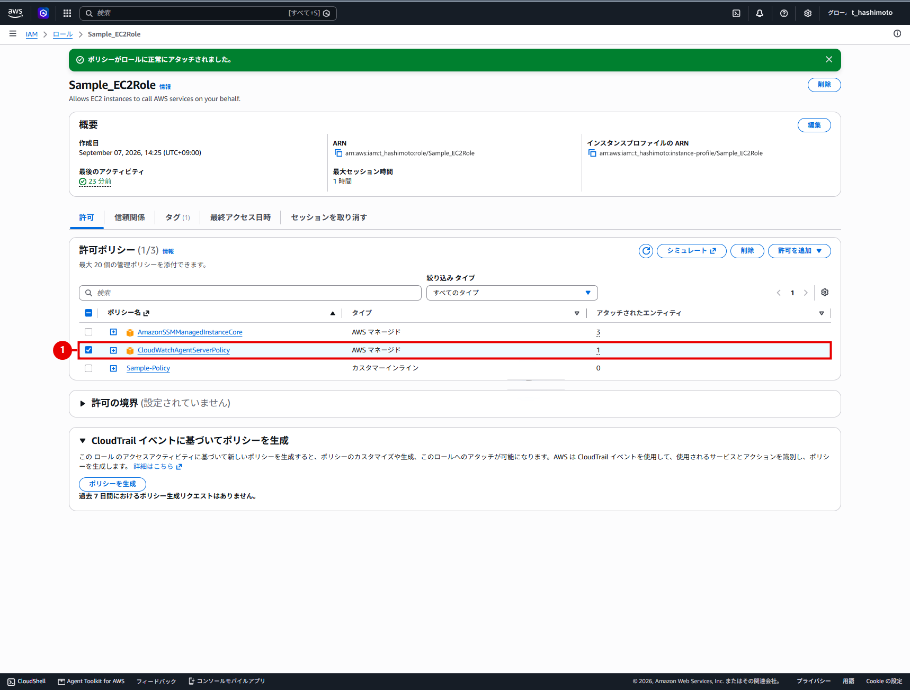
注意：CloudWatch Agent用IAM権限AmazonSSMManagedInstanceCoreだけでは、CloudWatch Agentによるメトリクス送信に必要な権限を満たしません。Agentを導入する前に、対象EC2のインスタンスロールへCloudWatchAgentServerPolicyが付与されていることを確認する
手順2：CloudWatch agentを導入する
- 既存設定を上書きしないよう、最初にSystems Managerの
AmazonCloudWatch-ManageAgentをAction=statusで実行し、agentの導入・稼働状態を確認 - 既にagentを利用している場合は、
C:\ProgramData\Amazon\AmazonCloudWatchAgent配下の設定と、既存のログ収集設定を確認・退避します。新しい設定は既存設定とマージしてから適用 - 未導入の場合はAWS Systems ManagerのRun Commandを開き、AWS管理ドキュメント
AWS-ConfigureAWSPackageを選択 Action=Install、Name=AmazonCloudWatchAgent、Version=latestを設定し、対象EC2へ実行- コマンドの全体的なステータスと詳細なステータスがともに
Success（日本語表示では「成功」）であることを確認
本検証では、導入前のAction=statusはWindows側で失敗し、Agentが稼働していないことを確認しました。その後、AWS-ConfigureAWSPackageを次の値で実行し、インストールが成功した
| 項目 | 設定値 |
|---|---|
| Action | Install |
| Installation Type | Uninstall and reinstall |
| Name | AmazonCloudWatchAgent |
| Version | latest |
| 対象 | Sample-mng-001（i-05914a8b6088a3a42） |
| S3出力 | 無効 |
Run Commandの実行結果で、全体的なステータスと詳細なステータスがともに「成功」であることを確認する
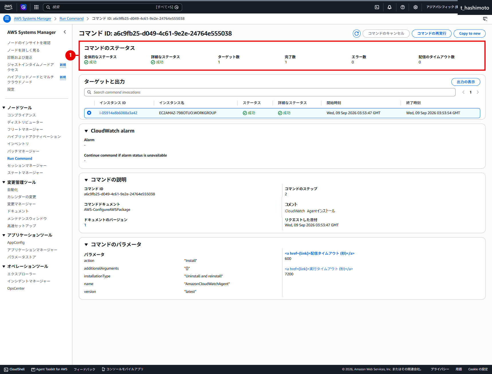
手順3：収集設定を作成する
設定ウィザードまたはJSON設定で、次のWindows Performance Counterを1分間隔で収集する
| オブジェクト | カウンター | リソース |
|---|---|---|
LogicalDisk |
% Free Space |
監視対象ドライブ。本例はC: |
Memory |
% Committed Bytes In Use |
なし |
設定例は次のとおりです。環境で必要なドライブだけを対象にし、一時領域やリカバリ領域を除外してください
{
"metrics": {
"namespace": "CWAgent",
"append_dimensions": {
"InstanceId": "${aws:InstanceId}"
},
"metrics_collected": {
"LogicalDisk": {
"measurement": [
{
"name": "% Free Space",
"rename": "LogicalDisk % Free Space",
"unit": "Percent"
}
],
"metrics_collection_interval": 60,
"resources": ["C:"]
},
"Memory": {
"measurement": [
{
"name": "% Committed Bytes In Use",
"rename": "Memory % Committed Bytes In Use",
"unit": "Percent"
}
],
"metrics_collection_interval": 60
}
}
}
}手順4：Parameter Storeへ収集設定を保存する
- Systems ManagerのParameter Storeを開き、パラメータの作成を選択
- 名前を
AmazonCloudWatch-sample-windows-basic-v1、階層をStandard、タイプをStringに - 値に前項のJSONを貼り付けて保存
本検証では、パラメータAmazonCloudWatch-sample-windows-basic-v1をStandard、Stringで新規作成し、作成成功メッセージと一覧表示を確認した
保存したパラメータを開き、名前、利用枠、種類および設定値が指定内容と一致していることを確認する
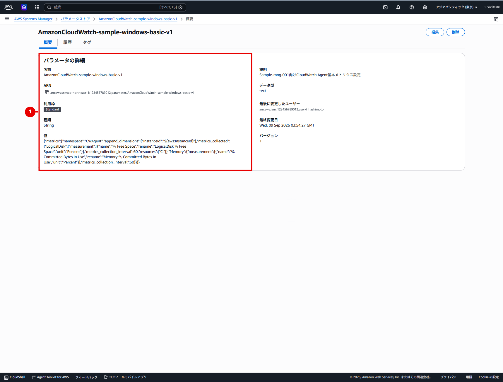
CloudWatchAgentServerPolicyが取得できる標準的な接頭辞に合わせ、本例ではAmazonCloudWatch-から始まる名前を使用します。既存の同名パラメータがある場合は上書きせず、内容を確認してバージョン名を変更してください
手順5：設定を適用し、メトリクスを確認する
- Systems ManagerのRun Commandで
AmazonCloudWatch-ManageAgentを選択 Action=configure、Mode=ec2、Optional Configuration Source=ssm、Optional Configuration Location=AmazonCloudWatch-sample-windows-basic-v1、Optional Restart=yesを指定し、対象EC2へ実行- Run Commandが
Successとなり、AmazonCloudWatch-ManageAgentのAction=statusでAgentがrunningかつconfigstatusがconfiguredとなることを確認 - 本設定は1分間隔のため、起動後1～5分を目安にCloudWatchのすべてのメトリクスで
CWAgent名前空間を開く - 対象インスタンスの
LogicalDisk % Free Space（instance=C:）とMemory % Committed Bytes In Useが1分間隔で出力されることを確認する。グラフ化したメトリクスの期間も1分に変更 - Windows上のパフォーマンスモニターの値と大きく乖離していないことを確認
設定適用コマンドが成功し、コマンドパラメータが指定内容と一致していることを確認する
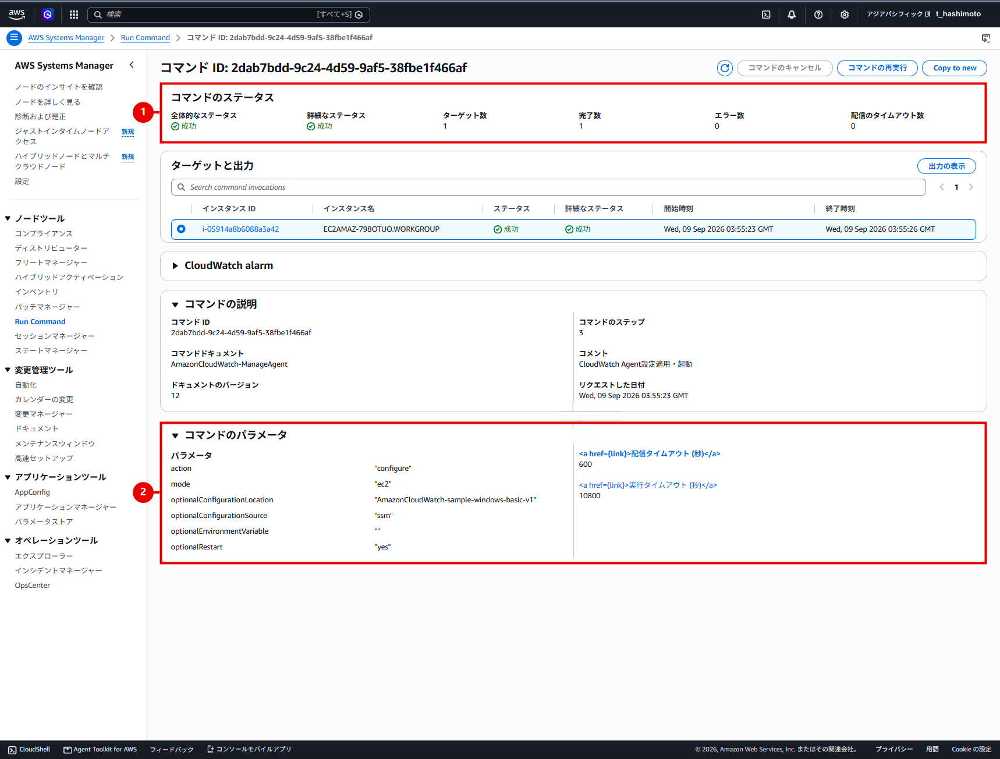
状態確認コマンドの出力で、statusがrunning、configstatusがconfiguredであることを確認する
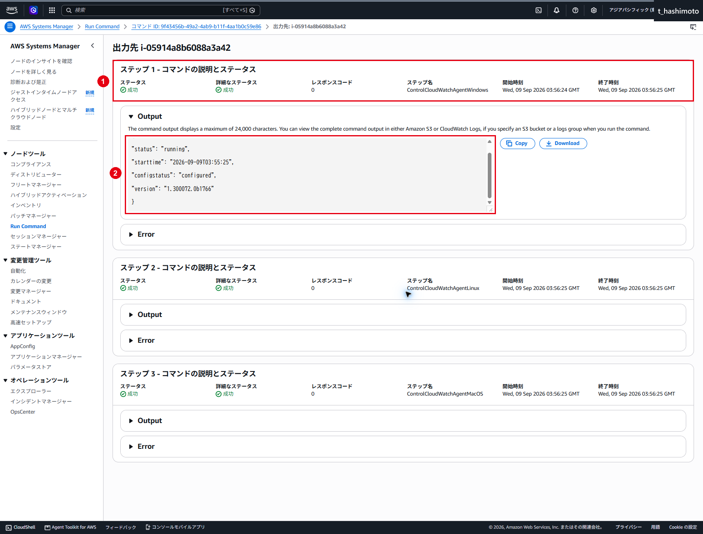
CloudWatchで対象メトリクスをグラフ化し、ディスク空き容量とメモリ使用率のデータが1分間隔で表示されることを確認する
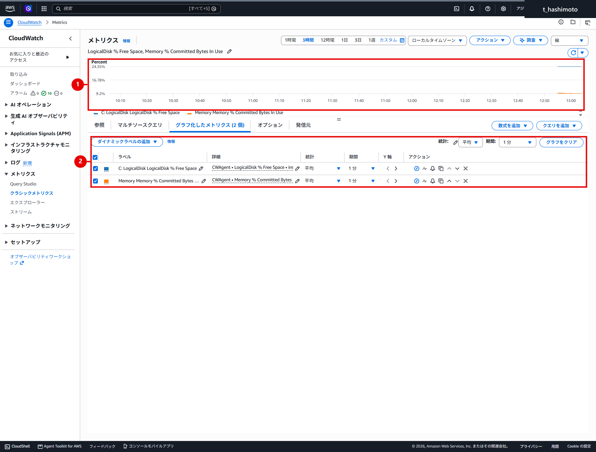
本検証では、設定適用後の状態確認で次の結果を確認した
| 確認項目 | 確認結果 |
|---|---|
| Agent status | running |
| configstatus | configured |
| Agent version | 1.300072.0b1766 |
| CloudWatch名前空間 | CWAgent |
| 論理ディスクメトリクス | LogicalDisk % Free Space、instance=C: |
| メモリメトリクス | Memory % Committed Bytes In Use |
| ディメンション | InstanceId=i-05914a8b6088a3a42 |
| グラフ表示 | 両メトリクスの最新データを1分期間で表示 |
ログ確認先：C:\ProgramData\Amazon\AmazonCloudWatchAgent\Logs\amazon-cloudwatch-agent.log
本例はunitをPercentとして明示します。既存設定で単位がNoneの場合は、しきい値20または80が意図どおりの百分率として送信されていることを、グラフとWindows側の値で確認してからアラームを作成する
6. Windows OSアラームを作成する
前節でCWAgentメトリクスの値・単位・最新データ時刻を確認した後、EC2アラームと同じ流れでメトリクスと条件の指定→SNS通知→名称と説明→レビューと作成を行う
論理ディスク空き容量
| 設定項目 | 初期設計値 |
|---|---|
| 名前空間 | CWAgent |
| メトリクス | LogicalDisk % Free Space |
| 統計 | Average |
| 期間 | 1分 |
| 条件 | 20以下 |
| 評価 | 3/3 |
| 欠損 | notBreaching |
| SNSトピック | sample-sns-cloudwatch-alerts |
| 命名例 | sample-cw-warning-windows-disk-free-low-<instance-id>-c |
メモリ使用率
| 設定項目 | 初期設計値 |
|---|---|
| 名前空間 | CWAgent |
| メトリクス | Memory % Committed Bytes In Use |
| 統計 | Average |
| 期間 | 1分 |
| 条件 | 80以上 |
| 評価 | 3/3 |
| 欠損 | notBreaching |
| SNSトピック | sample-sns-cloudwatch-alerts |
| 命名例 | sample-cw-warning-windows-memory-high-<instance-id> |
| 項目 | 内容 |
|---|---|
| 期待結果 | CWAgent名前空間に継続して値が入り、アラームがOKとなる |
| 証跡 | agentサービス状態、agentログ、CWAgentメトリクスグラフ、アラーム詳細 |
| 注意 | agent導入のSuccessだけでは、メトリクス送信成功を保証しない。CloudWatch側の最終データ時刻まで確認する |
| ロールバック | OSアラームを削除し、agent設定を停止する。共有インスタンスロールのポリシー削除は他EC2への影響を確認してから行う |
メトリクスが出力されない場合は、agentログに加えて、対象EC2からmonitoring.ap-northeast-1.amazonaws.comおよびSystems Manager関連エンドポイントへTCP/443で到達できること、VPCエンドポイントのセキュリティグループとプライベートDNS、プロキシ設定を確認する
7. 公式資料
- 出典：EC2のCloudWatchメトリクス
- 出典：EC2ステータスチェックアラームの作成
- 出典：CloudWatch agentで収集するメトリクス
- 出典：Systems Managerを使用したCloudWatch agentのインストール
- 出典：CloudWatch agent設定ウィザード
- 出典：CloudWatch agent設定ファイルの詳細
- 出典：AWS管理ポリシーCloudWatchAgentServerPolicy
- 出典：CloudWatch agentのトラブルシューティング
03. Amazon WorkSpaces監視
1. 目的
Amazon WorkSpacesの異常状態と接続失敗をアラームで検知し、利用状況をダッシュボードで確認する
2. 前提・入力値
| 項目 | 値 |
|---|---|
| 検証用WorkSpace ID | ws-jkxz7js0s |
| SNSトピック | sample-sns-cloudwatch-alerts |
| リージョン | アジアパシフィック（東京）ap-northeast-1 |
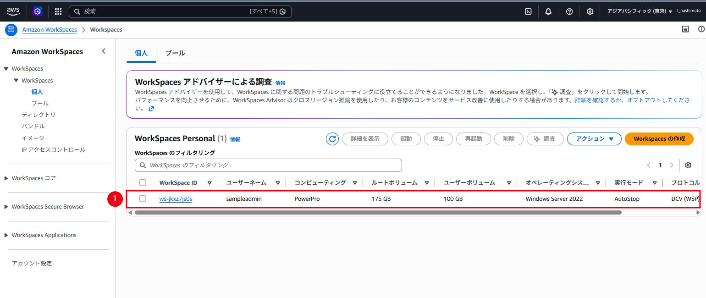
3. Unhealthyアラームを作成する
手順
- CloudWatchでアラーム－すべてのアラーム－アラームの作成を選択
- メトリクスの選択から
AWS/WorkSpacesを開く WorkspaceId=ws-jkxz7js0s、メトリクスUnhealthyを選択- 次の条件を設定
| 設定項目 | 設定値 |
|---|---|
| 統計 | 最大値（Maximum） |
| 期間 | 5分 |
| 条件 | 1以上 |
| アラームを実行するデータポイント | 3/3 |
| 欠落データの処理 | 正常（notBreaching） |
| SNSトピック | sample-sns-cloudwatch-alerts |
| アラーム名 | sample-cw-critical-workspaces-unhealthy-ws-jkxz7js0s |
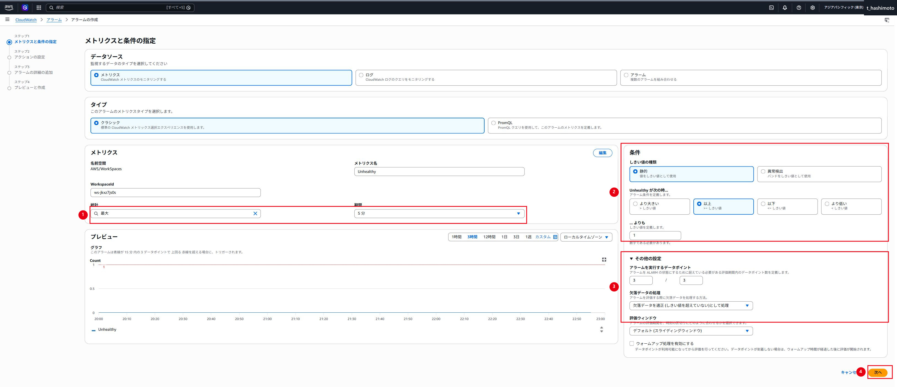
Unhealthy=1が3期間連続で発生した場合に通知します。瞬間的な状態遷移による誤報を抑えつつ、継続する異常を検知する初期設計
4. ConnectionFailureアラームを作成する
手順
AWS/WorkSpacesから対象WorkSpaceのConnectionFailureを選択- 次の条件を設定
| 設定項目 | 設定値 |
|---|---|
| 統計 | 合計（Sum） |
| 期間 | 15分 |
| 条件 | 3以上 |
| アラームを実行するデータポイント | 1/1 |
| 欠落データの処理 | 正常（notBreaching） |
| SNSトピック | sample-sns-cloudwatch-alerts |
| アラーム名 | sample-cw-warning-workspaces-connectionfailure-ws-jkxz7js0s |
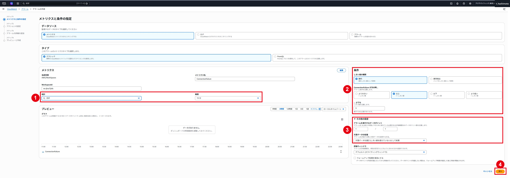
- 説明欄には、監視範囲を明確にするため「クライアント認証後、WorkSpacesセッションの接続開始時に発生した失敗を監視する。事前認証段階のAD認証失敗は含まれない」旨を記載
- 設定内容を確認してアラームを作成
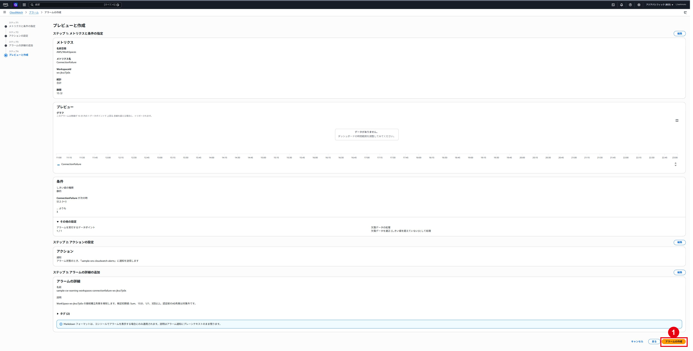
誤解しやすい点ConnectionFailureは、WorkSpacesクライアントの認証が成功した後、WorkSpaceセッションへの接続が開始されてからの失敗を示します。パスワード誤り、アカウントロック、認証前のActive Directoryエラーをすべて検知するメトリクスではありません。認証関連はDirectory Serviceログ、Windowsイベントログ、認証基盤側の監視と組み合わせる
5. UserConnectedをダッシュボードへ追加する
UserConnectedは利用状況の可視化に使用し、本手順では固定しきい値アラームを作成しない
- CloudWatchでダッシュボードを開き、対象ダッシュボードを選択
- 折れ線または数値ウィジェットを追加
AWS/WorkSpaces－UserConnectedを選択- WorkSpace単位では接続時の値が
1、未接続時が0となるため、単体の接続有無はMaximumで表示します。複数台の同時接続数を表示する場合は、各WorkSpaceの0/1系列を同じ期間・時点でメトリクス数式により合算します。期間内のSumだけを人数として扱うと、同じWorkSpaceの複数データポイントを重複計上するため使用しない - 業務時間帯を含む期間でグラフを確認
UserConnected=0は、必ずしも異常とは限らない。利用者が接続していない時間帯やAutoStop状態では正常な状態。固定アラームではなく、利用実態、ライセンス・キャパシティ検討、問い合わせ時の確認に用いる
6. 追加を推奨する監視メトリクス
現在の画像で作成を確認できるアラームはUnhealthyとConnectionFailureの2つです。次のメトリクスは、WorkSpaceのリソース不足や利用者の操作感を早期に検知するための追加候補です。現時点では作成画像がないため、設定済みの監視としては扱わない
優先して追加するアラーム
| メトリクス | 検知する内容 | 初期設定例 | 補足 |
|---|---|---|---|
CPUUsage |
CPU使用率の継続的な高騰 | Average、5分、80%以上、3/3 | バンドルのコンピューティングタイプ見直しに使用する |
MemoryUsage |
メモリ使用率の継続的な高騰 | Average、5分、80%以上、3/3 | ページング増加やアプリケーション遅延と併せて確認する |
RootVolumeDiskUsage |
ルートボリュームの容量逼迫 | Average、5分、80%以上、3/3 | 90%以上を重大アラームとする二段階監視も検討する |
UserVolumeDiskUsage |
ユーザーボリュームの容量逼迫 | Average、5分、80%以上、3/3 | 利用者データの増加傾向と併せて確認する |
上記の80%はAWSがすべての環境へ指定する固定値ではなく、導入時の初期値です。業務アプリケーションの通常値とピーク値を確認し、お客様の運用基準に合わせて調整する
ダッシュボードで傾向を確認してからアラーム化するメトリクス
| メトリクス | 用途 | 設定時の考え方 |
|---|---|---|
SessionLaunchTime |
セッション開始に要した時間 | AverageとMaximumを表示し、通常値と利用者が許容できる時間を確認してからしきい値を決める |
InSessionLatency |
クライアントとWorkSpace間の往復遅延 | AverageとMaximumを表示し、拠点・回線別の通常値を取得してからアラーム化する |
UDPPacketLossRate |
ストリーミング通信のUDPパケット損失率 | DCVではゲートウェイからクライアント方向の損失を示す。遅延や画面品質低下時の切り分けに使用する |
TCPRetransmissionRate |
TCP再送率 | DCVで使用可能。InSessionLatencyやBandwidthと同じ時間帯で確認する |
SessionDisconnect |
セッション切断回数 | 正常な切断を含む可能性があるため、単発通知ではなく増加傾向の確認に使用する |
ConnectionAttempt、ConnectionSuccess、ConnectionFailure |
接続試行と成否 | 同じ期間・ディメンションで並べ、失敗数だけでなく成功率の低下を確認する |
Available、Stopped、Maintenance |
WorkSpaces全体の状態把握 | DirectoryIdディメンションで台数を集約し、運用ダッシュボードへ表示する |
Bandwidth、BandwidthInbound、ConnectionDuration、FramesPerSecondもDCVで使用できます。これらは通常値の個体差が大きいため、固定しきい値を先に決めず、接続品質の問い合わせ時に同時刻の推移を確認できるようダッシュボードへ追加します。GPUバンドルを使用する場合だけGPUUsageも追加する
信頼されたデバイス機能を有効にする場合だけ、TrustedDeviceValidationFailureとTrustedDeviceCertificateDaysBeforeExpirationも監視対象へ追加する
ディメンションを選択する
- 個別障害を検知するアラームでは
WorkspaceIdを使用する - 全体傾向を把握するダッシュボードでは
DirectoryIdを使用する RunningMode、Protocol、ComputeType、BundleIdを使用すると、AutoStop／AlwaysOn、DCV、バンドル種別ごとの比較ができる- 接続関連メトリクスは、WorkSpacesクライアントでの認証成功後にセッション接続を開始した時点から記録されます。認証前のADエラーは別途監視する
7. 成功可否と切り分け
- アラーム一覧で作成した2アラームの状態が
OKで、アクションが有効であることを確認 UnhealthyがALARMの場合、WorkSpacesコンソールで対象IDの状態、ヘルスチェック、再起動・再構築履歴を確認ConnectionFailureがALARMの場合、同時刻のクライアントエラー、ネットワーク経路、Directory Service、セキュリティグループ、証明書・プロキシ設定を確認ConnectionFailureがOKでも、認証前の失敗は別途確認
| 項目 | 内容 |
|---|---|
| 目的 | WorkSpaceの異常状態と接続失敗の集中を検知する |
| 期待結果 | 作成後に2アラームがOKとなり、異常時にSNS通知される |
| 証跡 | 対象WorkSpace一覧、メトリクスグラフ、アラーム詳細・履歴、通知メール |
| 注意 | 停止中や未使用時間帯の欠損を異常扱いしない。認証前失敗は別監視とする |
| ロールバック | 対象WorkSpacesアラームとダッシュボードウィジェットのみ削除する |
| 未検証 | SNSサブスクリプション未設定のため、通知メール受信は未確認 |
8. 公式資料
04. ダッシュボード・動作確認
1. 目的
作成したアラームを一覧で確認し、監視値をCloudWatchダッシュボードへ集約します。また、SNS通知、アラーム判定、対象サービスの確認を分けて実施する
2. 作成済みアラームを確認する
CloudWatchでアラーム－すべてのアラームを開き、検索欄へsample-cw-を入力する
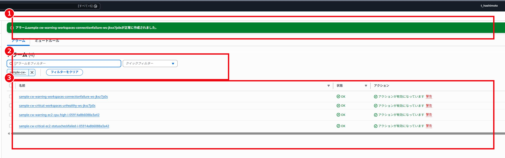
検証環境では次の4アラームを作成し、いずれもOK、アクション有効であることを確認済み
| アラーム名 | 対象 | 検証結果 |
|---|---|---|
sample-cw-critical-ec2-statuscheckfailed-i-05914a8b6088a3a42 |
EC2死活 | OK |
sample-cw-warning-ec2-cpu-high-i-05914a8b6088a3a42 |
EC2 CPU | OK |
sample-cw-critical-workspaces-unhealthy-ws-jkxz7js0s |
WorkSpaces状態 | OK |
sample-cw-warning-workspaces-connectionfailure-ws-jkxz7js0s |
WorkSpaces接続失敗 | OK |
確認項目：
- アラーム名が命名規則に一致
- 対象リソースID、メトリクス、統計、期間、しきい値が設計値と一致
- 通知先が
sample-sns-cloudwatch-alertsである - アクションが有効である
作成直後は評価に必要なデータポイントがそろわず、INSUFFICIENT_DATAになる場合があります。評価期間分待ってから最終状態を確認する
3. CloudWatchダッシュボードを作成する
入力値
| 項目 | 例 |
|---|---|
| ダッシュボード名 | sample-cw-monitoring-dashboard |
| 表示期間 | 3時間、1日、1週間を用途に応じて切り替え |
| 自動更新 | 1分または5分 |
手順
- CloudWatchでダッシュボード－ダッシュボードの作成を選択
- 名前に
sample-cw-monitoring-dashboardを入力 - 次のウィジェットを配置します。検証環境では「今回配置済み」の項目まで作成し、画面表示を確認済み
| 区分 | ウィジェット | メトリクス | 推奨表示 |
|---|---|---|---|
| 今回配置済み | EC2負荷 | CPUUtilization |
折れ線、Average |
| 今回配置済み | WorkSpaces状態・利用 | Unhealthy、ConnectionFailure、UserConnected |
折れ線 |
| 今回配置済み | アラーム状態 | 本書で作成した4アラーム | アラームステータス |
| 追加予定 | EC2状態 | StatusCheckFailed |
数値または折れ線、Maximum |
| 追加予定 | Windows OS | LogicalDisk % Free Space、Memory % Committed Bytes In Use |
折れ線、Average |
| 追加予定 | WorkSpacesリソース | CPUUsage、MemoryUsage、RootVolumeDiskUsage、UserVolumeDiskUsage |
折れ線、Average |
| 追加予定 | WorkSpaces接続品質 | SessionLaunchTime、InSessionLatency、UDPPacketLossRate、TCPRetransmissionRate |
折れ線、AverageとMaximum |
- リソース名、単位、統計、期間が一目で分かるウィジェットタイトルを設定
- ダッシュボードの保存を選択
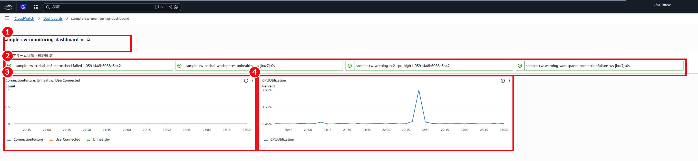
検証範囲
ダッシュボード本体、EC2 CPU、WorkSpaces 3指標、作成済みアラームの配置は確認済みです。Windows OSメトリクスは検証環境で未出力のため、空のウィジェットを完成証跡として追加していません。CloudWatch agentの設定完了後に表の「追加予定」を配置する
4. SNS通知をテストする
4.1 SNS単体の配信確認
- SNSサブスクリプションが
Confirmedであることを確認 - 変更作業時間帯に、トピック
sample-sns-cloudwatch-alertsから「CloudWatch監視通知テスト」と分かるテストメッセージを発行 - 宛先で件名、本文、受信時刻を確認
この確認は「SNSトピックから通知先まで」の配信経路を確認するもので、メトリクスやアラームの判定は確認しない
4.2 アラームを含む確認
本番リソースに負荷や障害を意図的に発生させないでください。検証環境で次のいずれかを実施する
- 一時的なテスト用アラームを作り、現在値に対して安全に
ALARMとなるしきい値を設定する - AWS CLIの
cloudwatch set-alarm-stateを利用できる運用環境では、承認済みのテスト手順に従って一時的に状態を変更する
確認後はテスト用アラームを削除し、本番アラームのしきい値を変更していないことを確認する
5. 成功可否の判定方法
5.1 CloudWatch上の確認
| 状態 | 意味 | 対応 |
|---|---|---|
OK |
評価期間内でしきい値違反が成立していない | 対象メトリクスの最終時刻も確認する |
ALARM |
しきい値違反が成立した | 履歴、メトリクス、対象サービスを確認する |
INSUFFICIENT_DATA |
判定に必要なデータが不足 | 停止、削除、agent停止、リージョン、メンテナンスを確認する |
- アラーム詳細のグラフで、状態変更前後の値を確認
- 履歴で、状態変更時刻、理由、通知アクションの成否を確認
- SNS通知の受信時刻とアラーム履歴を照合
- 対象サービスのコンソール、OSログ、ジョブ履歴で原因と影響を確認
5.2 「成功」「OK」「正常」を混同しない
- アラーム作成画面の成功：設定APIが受理されたこと
- アラーム状態
OK：設定したメトリクスが、その期間でしきい値に違反していないこと - SNS配信成功：SNSから購読先への配信が成功したこと
- サービス正常：業務上必要な機能、OS、アプリケーションおよび認証に問題がないこと
したがって、OK表示だけで作業完了とせず、「対象メトリクスの最新時刻」「アラーム履歴」「SNS受信」「対象サービス側の状態」を証跡として残す
6. 作業結果
| 項目 | 内容 |
|---|---|
| 目的 | 複数サービスの監視状態を集約し、通知を含む運用確認を行う |
| 入力値 | ダッシュボード名、対象メトリクス・アラーム、表示期間 |
| 期待結果 | 必要なグラフとアラーム状態が表示され、テスト通知を受信できる |
| 証跡 | ダッシュボード全体、アラーム詳細・履歴、SNS購読状態、受信メール、対象サービス画面 |
| 注意 | テストで本番リソースへ障害や高負荷を与えない。通知には機密情報を含めない |
| ロールバック | テスト用アラーム・ウィジェットを削除する。本番アラームを変更した場合は承認済み設定へ戻す |
| 未検証 | SNS購読・受信、Windows OSのウィジェットおよびエンドツーエンド通知試験は未検証。ダッシュボード本体と検証対象メトリクスの表示は確認済み |
7. 定期点検
- 月次：アラーム一覧、無効アクション、
INSUFFICIENT_DATAの長期継続、SNS購読状態を確認 - 四半期：しきい値、評価期間、通知先、不要アラーム、ダッシュボード構成を見直す
- 構成変更時：新規EC2およびWorkSpaceが監視対象へ追加されたことを確認
- 年次または運用規程に基づく周期：SNS通知とCloudWatchアラームの動作試験を実施